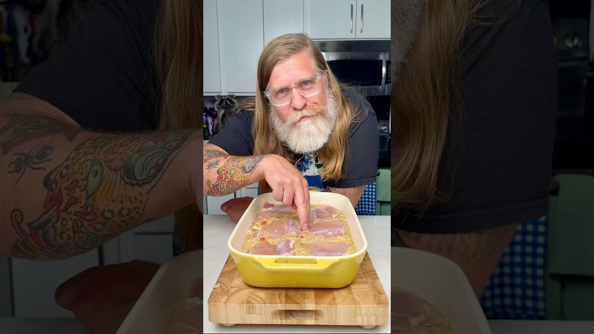

| Course | Main Dish |
| Categories | Chicken, Rice, Casserole |
| Collections | One Pot, Drew Cooks |
| Source | Drew Cooks – YouTube |
| Notes | see “Notes” below |

Reconstructed from the video's narration (spoken recipe) — the video has no written recipe in its description. Quantities and steps below are only those actually stated out loud; see "Gaps in this export" for what wasn't specified.
2 cups long-grain rice
1 bell pepper, chopped
1 yellow onion, chopped
1 can cream of chicken soup
1 can cream of mushroom soup (the video uses the roasted garlic variety)
1 packet onion soup mix
~1 tsp oregano
2 cups chicken broth (or water)
Chicken thighs (quantity not stated — "a handful")
Seasoned salt, to taste
Parsley, to garnish (optional)
A can of peas, to serve on the side (optional)
Preheat the oven to 350°F.
In a mixing bowl, combine the rice, bell pepper, onion, cream of chicken soup, cream of mushroom soup, onion soup mix, oregano, and chicken broth. Whisk together until well combined.
Pour the mixture into a greased 9x13 baking dish.
Nestle the chicken thighs into the rice mixture, spacing them so they're not touching (about two fingers apart).
Sprinkle seasoned salt over the thighs.
Cover the dish tightly with foil.
Bake at 350°F for about 1 1/2 hours.
Carefully remove the foil. Garnish with parsley if desired. Serve.
Gap in this export: Number of chicken thighs, or whether bone-in/boneless and skin-on/skinless
Gap in this export: Can sizes for the cream soups
Gap in this export: Size of the onion soup mix packet
Gap in this export: Amount of seasoned salt
Gap in this export: Number of servings